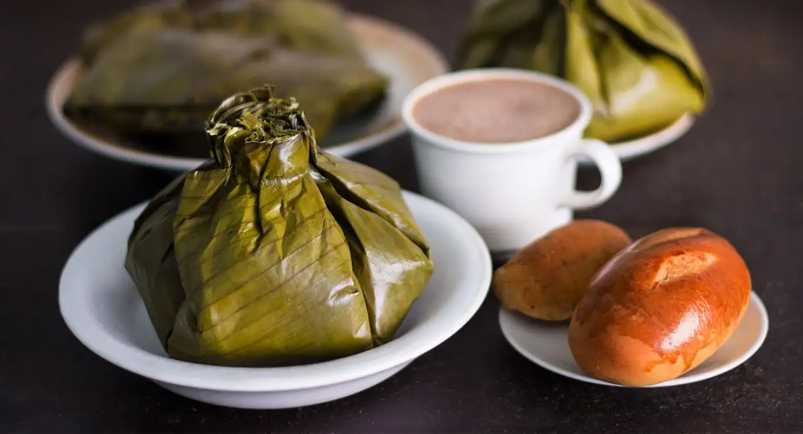

Tamales Tolimenses

Tamales Tolimenses, from the Tolima region, are typically made with chicken, pork, boiled egg, carrots, peas, potatoes, and rice. These tamales are usually ball-shaped, rather than the traditional rectangle.
Tamales are an ancient food, possible emerging in Pre-Colombian history as early as 7000 BCE. No one knows for sure where the tamale originated, but it seems to be born of creativity and necessity. The ability of tamales to be made ahead, easily transported, and warmed as needed, likely made them very appealing for frequently warring and traveling Mesoamerican tribes.
Colombian tamales share quite a few differences with tamales from other countries; they are less spicy than Mexican tamales, they are wrapped in plantain or banana leaves, and lard is not typically used to mix the masa.
Tamales are one way that Colombians eat breakfast like kings. The Tolimense tamale is especially popular as a breakfast food, served with… can you guess? Hot chocolate.
Ingredients
Filling
- 2 pounds of pork ribs, cut into small pieces
- 12 pieces of chicken
- 1 pound pork belly, cut into small pieces
- 4 medium potatoes, peeled and sliced
- 2 large carrots, peeled and sliced
- 6 cooked eggs, sliced
- 1 cup peas
- 3 cups cooked rice
Marinade
- 1 large onion, chopped
- 4 garlic cloves
- 1 large red bell pepper, chopped
- 1 large green bell pepper, chopped
- 4 scallions, chopped
- 4 tablespoons ground cumin
- 3 tablespoons sazon goya with azafran or color salt
- 2 cups water
Masa
- 1 pound yellow precooked corn meal (masarepa)
- 5 cups chicken stock
- salt (to taste)
- 1/2 cup marinade
- 2 tablespoons sazon goya with azafran or color salt
Wrapping
- 2 pounds plantain or banana leaves, cut into pieces about 15 inches long
- string
- water and Salt to cook the tamales
Steps
- Place all the marinade ingredients in the blender and blend until smooth. Reserve 1/2 cup of the marinade to prepare the masa.
- In a large plastic bowl place all the meat, add 1 1/2 cups of the marinade. Mix well, cover and refrigerate overnight.
- To prepare the masa: Place the masarepa in a large bowl, add the water, salt, sazon goya or color and reserved marinade. Mix well with a wooden spoon or your hands.
- Wash the leaves well with hot water and set aside.
- To assemble the tamales: Place 1 piece of the leaf on a work surface and place a second leaf on top, pointing in the opposite direction, like forming a cross.
- Spread 1/2 cup of masa and about 1/4 cup of rice in the center of the banana leaves, at the point where they connect and form a cross. Place, 1 piece pork belly, 1 piece of chicken and 1 piece of rib on top of the masa and place about 1 tablespoon of peas, 1 or 2 slices of carrots and 2 slices of potatoes on top of the meat.
- Bring the corners of the banana leaves up to the middle of the filling, and tie it with butcher's string right above the filling, so that there is a tuft of leaves above the string (see picture). Continue the process until all the tamales are wrapped and tied.
- Bring a large pot with salted water to a boil. Add the tamales and then reduce the heat to low. Cover and cook for 2 hours. Remove the tamales from the pot and let them sit for about 5 minutes before serving. Cut the stirring and serve in the leaves.